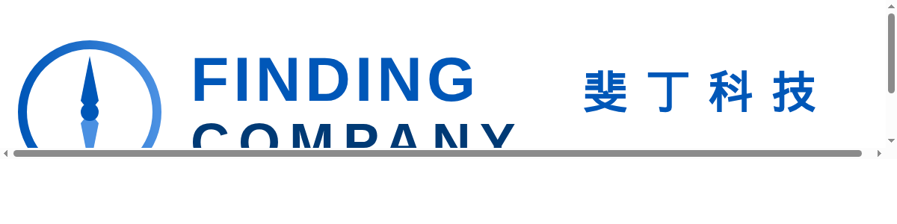

全球营地设备市场2023年约$152亿，其中：
整合后的生态系统市场：三者叠加形成"全自动智能露营解决方案"，目前市场空白。预计2025-2030年CAGR 24%，2030年可达$120亿（三者总和的三分之一通过集成溢价实现）。
中国露营经济2022年220亿元，2027年预计600亿元（CAGR 24.3%）。高端营地（Glamping）占比15%，年增长30%+。
SAM：高端智能露营生态系统（营地自动化+温控+太阳能）中国市场约¥80亿/年（CampBot ¥20亿 + ClimateBot ¥50亿 + SolarPower ¥10亿叠加）。
| 方案 | 优势 | 劣势 | SmartCamp对策 |
|---|---|---|---|
| 传统高端帐篷（The North Face等） | 品牌强、材质好 | 无主动功能，依赖外部设备 | 集成智能控制，一键搭建+温控+供电 |
| 独立营地机器人（Concept/原型） | 自动化搭建效率高 | 仅搭建，无温控/电力集成 | 三合一系统，覆盖完整露营场景 |
| 便携空调扇/电暖器 | 制冷/加热效果 | 噪音大、能耗高、安全隐患 | 半导体静音+安全监控+自动温湿度调节 |
| 便携电源（Jackery/Anker） | 品牌成熟、渠道广 | 充电慢、寿命短（500次）、无智能 | 磷酸铁锂+太阳能2h快充+AI调度 |
| 型号 | Finding Pro | Finding Lite | Finding Mini |
|---|---|---|---|
| 定位 | 旗舰全能 | 轻量户外 | 超小穿戴 |
| 重量 | 250g | 150g | 50g |
| 卫星 | 北斗+铱星双模 | 北斗单模 | 无 |
| LoRa集群 | 支持（4km） | 支持（2km） | 无 |
| 端侧AI | 风险预警+轨迹预测 | 基础安全提示 | 无 |
| 续航 | 72小时（GPS） | 48小时 | 7天待机 |
| 价格 | ¥4,999 | ¥1,999 | ¥799 |
三条产品线覆盖不同价格段和使用场景，形成协同：
| 产品 | MSRP | 渠道价 | 早期优惠 |
|---|---|---|---|
| Finding Pro | ¥4,999 | DTC: ¥4,999 企业: ¥4,199 | 早鸟减¥500 |
| Finding Lite | ¥1,999 | DTC: ¥1,999 零售: ¥1,699 | 套装减¥200 |
| Finding Mini | ¥799 | DTC: ¥799 渠道: ¥599 | 首发送腕带 |
| 风险 | 类别 | 概率 | 影响 | 应对 |
|---|---|---|---|---|
| 卫星服务不稳定 | 技术 | 中 | 高 | 双服务商（北斗+铱星）+ SLA |
| 芯片供应短缺 | 供应链 | 中 | 高 | 多源采购 + 安全库存 |
| 竞品价格战 | 市场 | 高 | 中 | 强化生态 + 品牌 + 不跟进降价 |
| 产品安全事件 | 合规 | 低 | 极高 | 多级保护 + 保险 + UL认证 |
| 用户接受度低 | 市场 | 中 | 高 | 租赁选项 + 30天退货 + 社区运营 |
Finding完整产品线（Pro/Lite/Mini）覆盖了户外智能装备从高端到大众市场的全部需求。通过卫星+AI+LoRa技术组合，我们建立差异化壁垒。建议分阶段发布：Q3推出Pro树立品牌，Q1推出Lite扩大规模，Q2推出Mini占领穿戴入口。
财务预期：首年（2026）营收目标¥120M，其中Pro占40%、Lite占45%、Mini占15%。三年内市场份额进入国内前三。